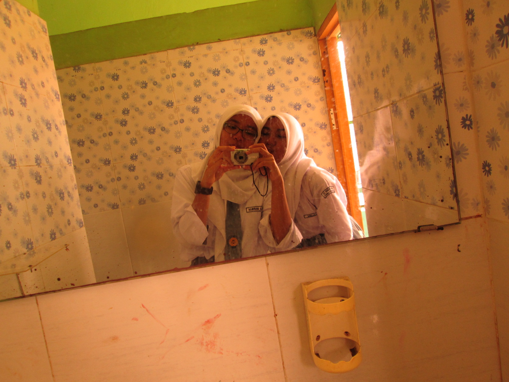

Haii aku Kayla 👋
Ini website pertamaku. Di website ini isinya tentang biografi aku.
Nama ku : Kayla Marwah
Kelas ku : 10
Tempat kelahiran dan tinggalku di Jakarta.
Aku lahir tanggal 10 Agustus 2009. Hampir tanggal cantik tapi kebalik 😆
My Girlfriend 💕
Hi guys, kenalin ini pacarku namanya Mezzaluna, biasa dipanggil Luna. Dia beda kelas denganku.
Luna adalah wanita termanis dan tercantik yang pernah aku temukan.
Tingginya 164 cm. Rambutnya wavy, tebal, wangi, sampai orang-orang ngira dia nyatok 😌
Hobinya suka baca buku, terutama bukunya Bumi Series dari Tere Liye